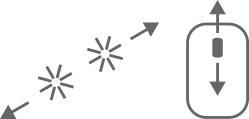
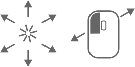
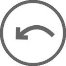
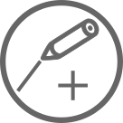
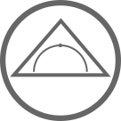
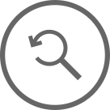

Virtuelle Sektormodelle
Hilfe
 |
Zoome hinein oder hinaus |
 |
Verschiebe den sichtbaren Ausschnitt der Arbeitsfläche |
| Beginne von vorn | |
 |
Mache die letzte Änderung rückgängig |
 |
Zeichne ein neues Liniensegment oder setze ein bestehendes fort |
 |
Füge ein Geodreieck ein |
| Lösche die ausgewählte Linie | |
 |
Setze den Zoom und den sichtbaren Ausschnitt der Arbeitsfläche zurück |
| Sichere dieses Applet als Eingabedatei | |
| Speichere ein Bild deiner Arbeitsfläche | |
| Starte den Vollbildmodus |